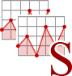
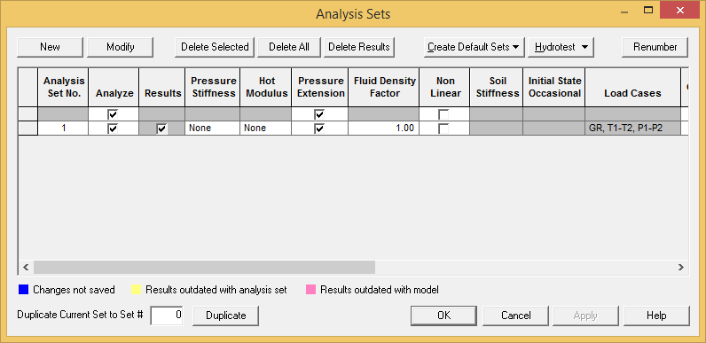
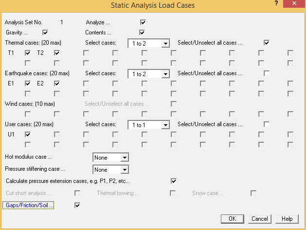
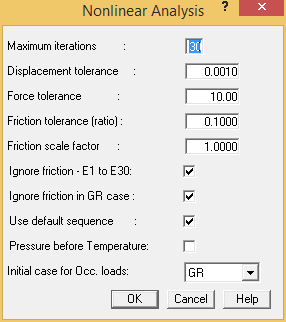

To Define a Static Analysis
- Select Analysis > Setup > Static Analysis Sets to display the Analysis Sets dialog.

- Select Analysis Set No. 1 and click Modify to display the dialog below.

- Enable the Earthquake cases E1 and E2.
| Note: |
Throughout this tutorial, the term "enable" is used to denote instances where you should place a check mark in an option field. "Enabled" fields contain a checkmark, while "disabled" fields have no check mark. |
- Enable User case U1. Enabling this field will allow us to analyze the concentrated load U1, which you previously defined at point A02N.
- Since we have defined gaps and friction on the guide supports that connect to the frames, we will need to enable the Gaps/Friction/Soil field. By enabling this field AutoPIPE considers these non-linear boundary conditions during the static analysis.
- Press OK to accept the remaining defaults and close the Static Load Cases dialog.
- Since you enabled Gaps/Friction/Soil, AutoPIPE displays the Non-linear Analysis dialog to allow customization of how the non-linear analysis is performed. Customization is only required if convergence problems occur during the analysis or a special load sequence is required.

- Press OK to accept the defaults and close the dialog.
- Press OK to close the Analysis Sets dialog.
- When prompted to analyze the model, press No in the Confirm dialog.